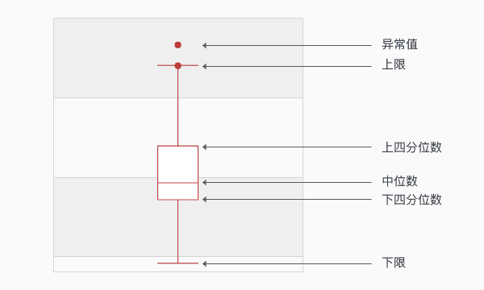
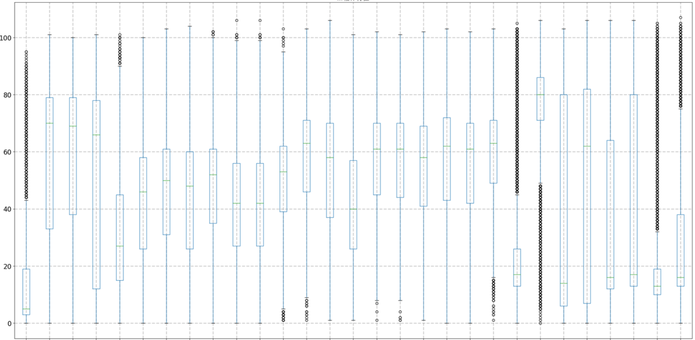

1 import matplotlib.pyplot as plt
2 from matplotlib.font_manager import FontProperties
3 import numpy as np
4 import pandas as pd 1 def DrawMultBoxPic(input_dict,Y_label):
2 dict_list_length = []
3 for item in input_dict:
4 temp_length = len(input_dict[item])
5 dict_list_length.append(temp_length)
6 # 获取最长列表长度
7 max_length = max(dict_list_length)
8 # 每个列表在后面追加None
9 for item in input_dict:
10 diff_length = max_length - len(input_dict[item])
11 if diff_length > 0:
12 for i in range(diff_length):
13 input_dict[item].append(None)
14 # else:
15 # print('{}文件列表长度最长'.format(item))
16 # 绘制箱型图
17 zhfont = FontProperties(fname='C:/Windows/Fonts/simsun.ttc', size=16)
18 data = pd.DataFrame.from_dict(input_dict)
19 data.boxplot(widths=0.3,figsize=(30,15),fontsize=16)
20 plt.xlabel(u'煤质文件名称', fontproperties=zhfont)
21 plt.ylabel(Y_label, fontproperties=zhfont)
22 plt.title(Y_label, fontproperties=zhfont)
23 # plt.axis([0, 6, 0, 90])
24 plt.grid(axis='y', ls='--', lw=2, color='gray', alpha=0.4)
25 plt.grid(axis='x', ls='--', lw=2, color='gray', alpha=0.4)
26 imgname = 'E:\\' + Y_label + '.png'
27 plt.savefig(imgname, bbox_inches = 'tight')
28 # plt.show()
1 """
2 【函数说明】获取箱体图特征
3 【输入】 input_list 输入数据列表
4 【输出】 out_list：列表的特征[下限，Q1,Q2,Q3,上限] 和 Error_Point_num：异常值数量
5 【版本】 V1.0.0
6 【日期】 2019 10 16
7 """
8 def BoxFeature(input_list):
9 # 获取箱体图特征
10 percentile = np.percentile(input_list, (25, 50, 75), interpolation='linear')
11 #以下为箱线图的五个特征值
12 Q1 = percentile[0]#上四分位数
13 Q2 = percentile[1]
14 Q3 = percentile[2]#下四分位数
15 IQR = Q3 - Q1#四分位距
16 ulim = Q3 + 1.5*IQR#上限 非异常范围内的最大值
17 llim = Q1 - 1.5*IQR#下限 非异常范围内的最小值
18 # llim = 0 if llim < 0 else llim
19 # out_list = [llim,Q1,Q2,Q3,ulim]
20 # 统计异常点个数
21 # 正常数据列表
22 right_list = []
23 Error_Point_num = 0
24 value_total = 0
25 average_num = 0
26 for item in input_list:
27 if item < llim or item > ulim:
28 Error_Point_num += 1
29 else:
30 right_list.append(item)
31 value_total += item
32 average_num += 1
33 average_value = value_total/average_num
34 # 特征值保留一位小数
35 out_list = [average_value,min(right_list), Q1, Q2, Q3, max(right_list)]
36 # print(out_list)
37 out_list = Save1point(out_list)
38 return out_list,Error_Point_num